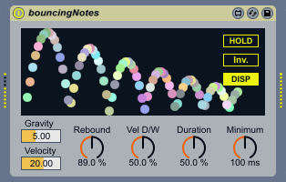

English / 日本語
bouncing notes
 
Download at maxforlive.com
(the last update: April 8, 2022 / version 1.2.0)
*** This is not an official device. If you were looking for that, please visit https://www.ableton.com/packs/. ***
While note on, generates repeating notes like bouncing table-tennis ball with dynamic display animation.
Simulates bounces from the levitation-ish on the Moon to fierce conditions of 60G.
And available in polyphonic and inverse mode!
Parameters
- Gravity: Represents the gravity; how fast the velocity of balls decreases.
- Velocity: The initial velocity of balls. 20 means to set 100*20m/msec. 100 means 2m/sec.
- Rebound: Represents the coefficient of restitution. It's often written 'e'. As increasing Rebound, the velocity of echo notes decreases slower.
- Vel D/W: Represents Velocity Dry/Wet ratio as known as velocity sensitivity.
- Duration: Adjusts the ratio between the duration time of echo notes and bounces.
- Minimum: The minimum bouncing time. It depends on 'HOLD' switch the behavior at the duration between bounces reached Minimum.
- HOLD: When enabled, bouncing notes continue after the duration of bounces reached 'Minimum' time.
When disabled, bounces end at duration time of bounces reached 'Minimum' time. - DISP: Enable or disable the dynamic display animation.
- Inverse: When enabled, the bounces are inverted; the duration of notes increases.
TIP: When inverse mode, you can start bounces from shorter duration by setting 'Velocity' to a small number (2-3).
Known issues
- While notes playing, changing some parameters does not effect until the next bound, not in real-time.
It is necessary to change most of the patch code (the way to manage by CPU time such as Note Echo in Max for Live Essentials) for correcting this issue,
however, no one might want to manipulate gravity in real-time. - Playing many notes at a time causes some CPU usage. (might be caused by the instruments after this device)
Disabling DISP switch may reduce CPU usage.
Release notes
Changes in version 1.2.0 (April 8, 2022)
- Refined graphic rendering method migrated from lcd to jsui object. This allows features below.
- The balls have better color schemes for conditions in user Lives themes or adjusted brightness.
- When the inverse mode, the balls go in the opposite direction.
- When the balls reached outside of the display, they appear from another side to keep visible.
- Less CPU usage and more accuracy when lots of poly notes.
- Fixed an issue when internal velocity may go far below 1 and it needs much time to recover velocity after the inverse mode was enabled.
Changes in version 1.1.0 (February 23, 2021)
- Added the inverted bouncing feature at last! The bouncing is inverted when Inv. button is on.
Each time pressing Inv. button makes undo histories. So it is recommended to automate Inv. button when it is toggled repeatedly. - Added Velocity parameter to adjust the initial velocity (of balls).
Setting the Velocity value low works effectively with the inverted mode.
Also adjusted the UI including other parameter's font. - Changed he initial value of Minimum to 50msec from 100msec.
- These changes do not affect Live sets which use the device of previous versions.
- Changed notation method of the version to semantic versioning.
Changes in version 1.04 (March 23, 2020)
- Fixed the display problem in Max 8 by changing HOLD and DISP button to default display mode from label display mode.
- Reduced CPU usage when parameters are automated by "defer automation output" option.
- Refined the animation logic so that draws accurately when changing parameters and slightly reduced overall CPU usage.
Version 1.00: the first release (March 21, 2020)